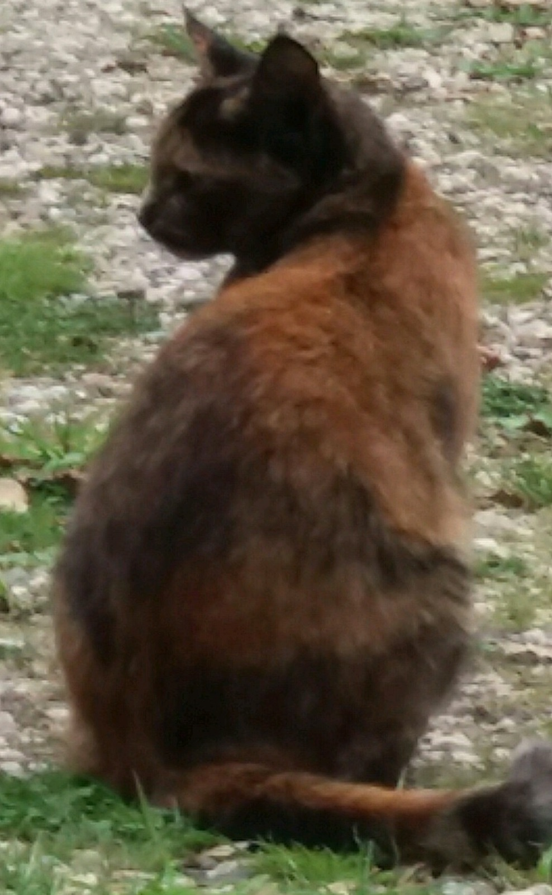
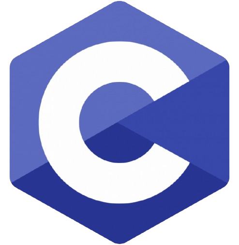
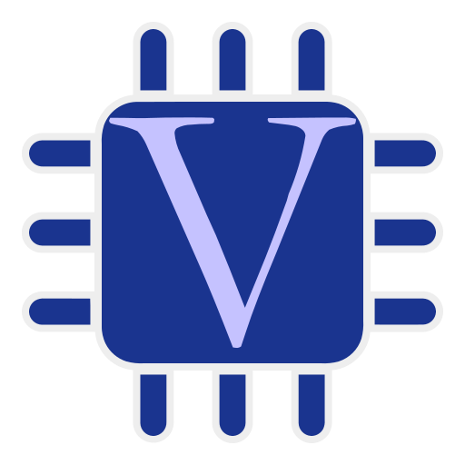
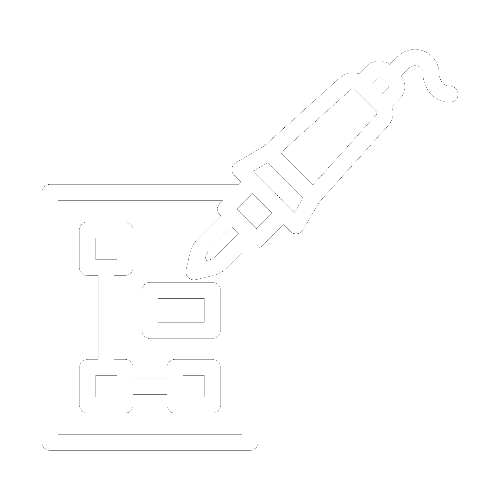
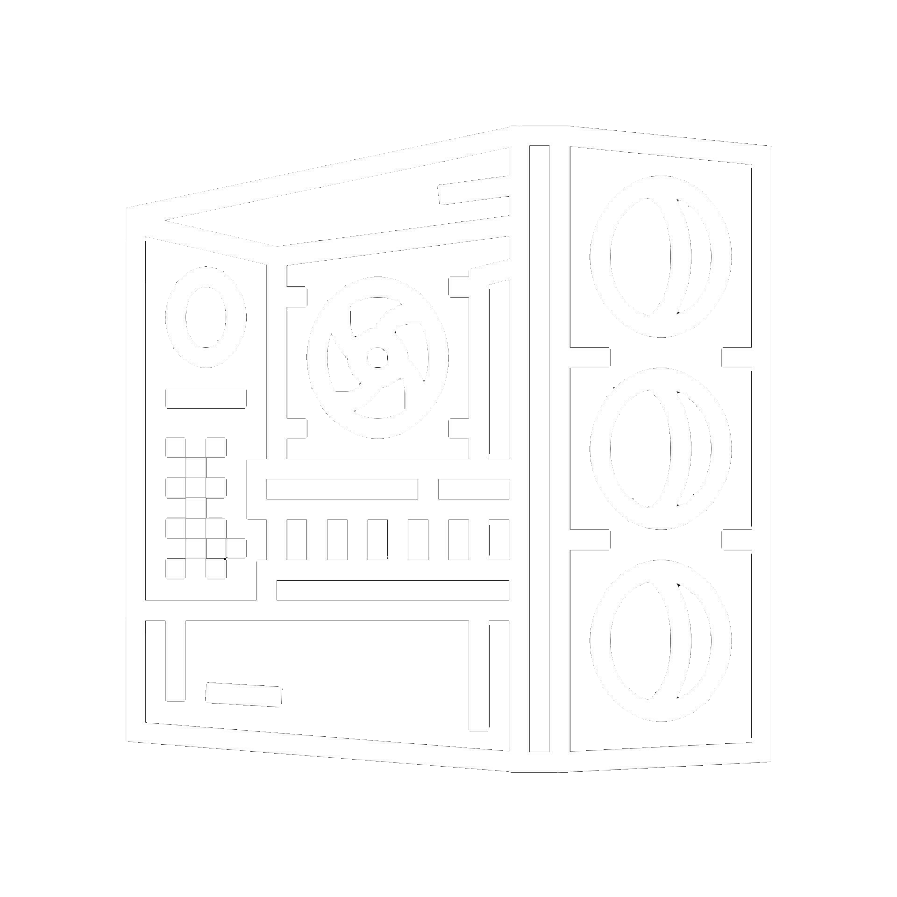

About me
Hi, I’m Tibbe Snel, I am years old and live in the Netherlands. I love figuring out how things work and using that knowledge to build cool stuff. I’m especially interested in physics, astronomy computers and electronics. But I’m not just into tech and science. I also enjoy learning about history, ancient Greece, and honestly anything I can learn about :). Besides all that, I love listening to music and playing drums and piano. Oh, and I have two cats who sometimes walk across my keyboard mid-project. They're not very helpful, but they’re great company.
I really enjoy helping others understand things by explaining how they work. That’s why I made this site, to document my projects and share what I learn, hoping it can be useful to others too. Here’s a bit more about my education, skills and experience:

Education
Secundary Education (VWO – Gymnasium)
Nature & Technology profile
Courses included: Physics, Chemistry, Mathematics B (accelerated), Mathematics D, Computer Science, Dutch, English, and Ancient Greek.
Talents program Science (Radboud)
University course
A program for pre-university students to follow subjects at the Radboud university. I'm going to do: Calculus A: 6EC and Calculus B.
Skills and tools
These are the code languages skills and tools I use and am learning:
Programming languages
 Python
Python

C Risc-V assembly
Risc-V assembly

VerilogSoftware
 Vivado
Vivado
 Linux
Linux
 TrueNas
TrueNas
 PCB Design
PCB Design
Other skills

Soldering
Basic networking Microcontrollers
Microcontrollers

PC Building